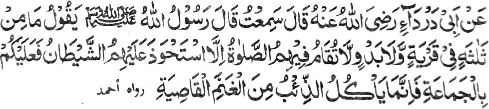

Miyakathitayan ko Abu Darda (Radhiallaho ’Anho) a pitharo iyan, "Miyaneg aken so Rasulollah (Sallallaho Alaihi Wasallam) a gi-i niyan tharo-on. Apiya telo bo katao a mama a matimo si-i ko satiman a inged o di na si-i ko kilid a inged a di ran itindeg so Sambayang (a Barajoma) na singgawten siran o shaitan. Paliyogat rekano so Barajoma ka mata-an a aya pekhakan a arimao ko manga bili-bili na so misisibay ron (na so shaitan-i arimao o manosiya.'"
Aye zaboten si-i na so manga tao a mabibisig mbasok o di na so salakao ron, na awiden niran a akal a mipamayandeg iran so Sambayang a Barajoma opama ka telo siran odi na kalawanan noto Apiya dowa dowa siran, na taralebi den so kan Barajoma iran. So manga taribasok sangka-iya inged tano na kadakelan non na ipembagak iran so Sambayang ago ibebetad iran so galebek iran a dalina ko kipembagaken niran non, apiya so mala kiran i paratiyaya na tomo-on niyan a makatharambisa zambayang. Opama ka so manga taribasok ko nda-ida-ir a manga babasoka na thimo siran sa satiman a darepa na mbarajoma siran ko manga Sambayang Iran, na madakel a khatimo a tao nago makowa iran so mala a limo o Allah. Da-a maranti a alongan, da-a marages a oran, da-a mayao odi na panenggao, na tanto siran a mabibisig ko maito a sokatan sa donya, ogaid na pekhapapas kiran so mala a balas o Allah ko kibagaken niran ko Sambayang O badi siran na khakowa iran so manga limo polo takep a balas (ko kiya-aloy niyan ko isa a Hadith) opama ka zambayang siran sa Barajoma si-i ko manga babasoka iran.
Miya-aloy si-i ko isa a Hadith, "Andai kapagebang o pephamagonong sa kambing si-i ko kababa-an o palao go taros a zambayang, na so Allah na tanto rekaniyan a masoso-at ago ipephangandag Iyan ko manga Mala-ikat Iyan, 'Ilaya niyo so oripen Naken! Ka miyagebang sekaniyan na imanto na gi-i zambayang. Langon niyan na-i pinggola-ola sabap bo sa kalek iyan raken. Sabap san na inibegay Aken non so rila Aken ago tiyanggked Aken so kaphakasoled iyan ko Sorga."’